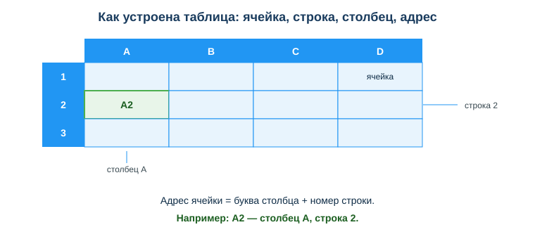
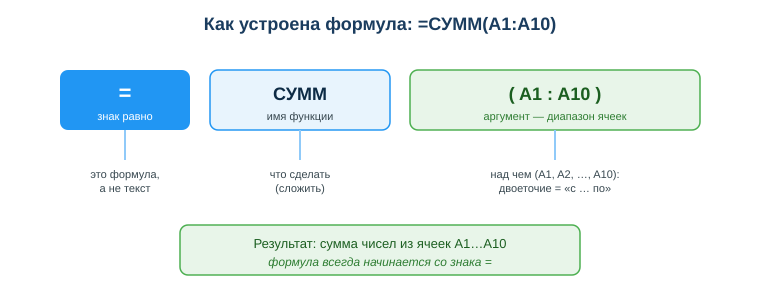

Дисциплина: Применение информационно-коммуникационных и цифровых технологий
Результат обучения: РО 2.1 — владение основами ИКТ · Объём темы: 2 часа
Квалификация: 4S06130103 «Разработчик программного обеспечения»
Расскажу, как это бывает в жизни, а не в теории. Тимлид скидывает тебе файл: 200 студентов курса и их итоговые баллы, один столбец с числами. К завтрашнему утру от тебя ждут три вещи — средний балл по группе, сколько человек сдали (балл ≥ 60) и наглядный график для отчёта. Первая мысль программиста, и я сам через это прошёл: «сейчас напишу скрипт, прочитаю файл, посчитаю». Открываешь редактор — и вот уже полчаса возишься с чтением CSV, кодировкой и отладкой ради задачи, которая решается за пять минут другим инструментом.
А теперь развилка, которую я видел десятки раз. Один студент открывает таблицу, вставляет данные, в одной свободной ячейке пишет =СРЗНАЧ(B2:B201), в соседней — =СЧЁТЕСЛИ(B2:B201; ">=60"), выделяет столбец и жмёт «вставить диаграмму». Через пять минут пишет в чат: «готово, средний 73,4, сдали 168 из 200, график во вложении». Второй сидит и пишет парсер на Python, потому что «так серьёзнее». К обеду у него ещё падают тесты на кодировке. Он не глупее — он просто не понял, что для этой задачи таблица быстрее кода.
Вот в чём суть темы. Электронная таблица — это не «бухгалтерская программа» и не «школьный Excel». Это инструмент быстрой работы с числами и данными, который считает за тебя, как только ты правильно записал формулу и навёл порядок в данных [1; 4]. И главное — завтра тимлид присылает исправленную оценку одному студенту, ты меняешь одно число в ячейке, а средний балл, число сдавших и график пересчитываются сами, тебе не нужно трогать ничего больше. Для разработчика это означает: прежде чем писать код для обработки логов, метрик или результатов тестов, ты можешь за минуты проверить данные и гипотезу в таблице. Кто умеет считать формулами и держать данные в порядке, тот тратит минуты там, где другие тратят часы. Это первый практический шаг к навыку data literacy — работе с данными, без которого сегодня не обходится ни одна IT-роль [8].
После изучения темы ты сможешь:
СУММ, СРЗНАЧ, МИН/МАКС, СЧЁТ, СЧЁТЕСЛИ, ЕСЛИ) для типовых расчётов;#ДЕЛ/0!, #ИМЯ?, #ЗНАЧ!) и понимать, что таблица тебе ими говорит;A2, F1); через адрес формула «достаёт» значение.A1:A10).=, по которому таблица вычисляет результат.A1) и абсолютной ($A$1).СУММ, СРЗНАЧ).Прежде чем разбирать ячейки и формулы, пойми главную идею, которая отличает таблицу от листа бумаги или калькулятора. На бумаге, если ты пересчитал сумму и одно слагаемое изменилось, придётся стирать и считать заново. Калькулятор выдаёт число и тут же его «забывает» — связи между числами он не хранит: набрал 50 × 3, получил 150, а откуда взялись 50 и 3, калькулятор уже не помнит.
Электронная таблица устроена принципиально иначе. Она хранит не результаты, а связи между данными. Ты говоришь ей не «здесь должно быть 150», а «здесь должно быть B2 умножить на C2». И пока в B2 лежит 50, а в C2 лежит 3, таблица показывает 150. Меняешь B2 на 60 — таблица мгновенно показывает 180, потому что формула пересчитывается автоматически, а тебе даже не нужно нажимать Enter где-то ещё. Давай сразу вживую, чтобы не было абстракции:
A B C D
1 товар цена кол-во стоимость
2 клавиатура 50 3 =B2*C2 → 150Ты видишь в ячейке D2 число 150. Теперь заходишь в B2 и меняешь 50 на 60, жмёшь Enter — и D2 сама, без твоего участия, показывает 180. В этом и есть сила инструмента: ты один раз описываешь логику расчёта, а дальше таблица сама поддерживает результат в актуальном состоянии [1; 11]. Это тот момент, который новичка удивляет: он ждёт, что число «застынет», как на калькуляторе, а оно живёт.
Эта идея напрямую готовит тебя к программированию. Когда в коде ты пишешь total = price * count, ты тоже описываешь не конкретное число, а правило: «итог — это цена, умноженная на количество». Изменятся price или count — изменится total. Формула в таблице — это та же мысль, только записанная проще и видимая глазом. Поэтому таблицы — хороший «тренажёр» мышления для будущего разработчика: ты учишься думать связями и зависимостями, а не отдельными числами.
Самые распространённые табличные программы — Microsoft Excel и Google Таблицы (Google Sheets) [11; 12]. Они почти одинаковы по логике: ячейки, формулы, функции работают так же, формулу из одной часто можно скопировать в другую без правок. А вот на чём спотыкаются почти все — на локале, то есть на региональных настройках. От них зависят две важные мелочи:
; — =СУММ(A1; A2). В английской локали и в «международном» режиме Google Таблиц — запятой , — =SUM(A1, A2). Если написать =СРЗНАЧ(B2,B201) в русском Excel, он либо ругнётся, либо поймёт запятую как десятичный разделитель и выдаст ерунду. Это не «баг программы» — это ты пишешь не тем разделителем, что ждёт локаль.0,9, 73,4. В английской — через точку — 0.9, 73.4. Отсюда и «конфликт»: если запятая уже занята под дробь, разделителем аргументов становится точка с запятой.Имена функций тоже локале-зависимы: в русском интерфейсе СУММ, СРЗНАЧ, а в английском — SUM, AVERAGE. Файл при этом один и тот же — просто интерфейс подставляет имя на твоём языке. В этом материале я привожу оба варианта имени (СУММ / SUM), чтобы ты узнавал функцию в любой программе, и по умолчанию пишу аргументы через ; — как в русском Excel. Встретишь чужую формулу с запятыми — просто помни: это та же формула в другой локали.
Открой схему «Структура таблицы: ячейка, строка, столбец, адрес» (приложение А, assets/06_shema-struktura-tablicy.svg) и держи её перед глазами — дальше мы разберём каждый элемент по ней.

Таблица — это сетка из клеток. Её устройство задают три понятия:
A, B, C, … После Z идут AA, AB и так далее (в Excel их 16 384 — до столбца XFD, но это ты вряд ли когда встретишь). На схеме столбцы — это вертикальные полосы с буквами наверху.1, 2, 3, … На схеме строки — это горизонтальные полосы с номерами слева.Как читается адрес. Адрес ячейки складывается из двух частей: сначала буква столбца, потом номер строки. Например, A2 — это ячейка в столбце A и строке 2. Запомни порядок: буква впереди, цифра сзади. Это не случайность, а соглашение, единое во всех табличных программах. Частая ошибка новичка — сказать «два-А» и написать 2A; таблица такого адреса не понимает. На схеме зелёным выделена конкретная ячейка — проверь себя: назови её адрес, читая сначала букву столбца сверху, потом номер строки слева.
Почему так важен адрес? Потому что формулы работают не с самими числами, а с адресами. Когда ты пишешь =A1+A2, ты не говоришь «сложи 5 и 7» — ты говоришь «сложи то, что лежит в A1, с тем, что лежит в A2». Смотри вживую:
A
1 5 ← лежит число 5
2 7 ← лежит число 7
3 =A1+A2 → 12Поменяй в A1 пятёрку на десятку — и A3 сама станет 17. Ты нигде не трогал формулу, а результат обновился, потому что формула ссылается на адрес, а не на само число. Адрес — это как имя переменной в программе: ты обращаешься к ячейке по имени, а не по содержимому. В этом весь смысл.
Чем строка отличается от столбца — и почему это важно для данных. Визуально разница простая: строка идёт поперёк (по горизонтали), столбец — вдоль (по вертикали). Но есть смысловая разница, которую нужно понять сразу: в правильно устроенной таблице данных одна строка — это одна запись (один объект), а один столбец — это одно свойство (одна характеристика). Например, в таблице студентов одна строка — один студент, а столбцы — это его имя, балл, статус:
A B C
1 ФИО балл статус
2 Студент 1 82 зачёт
3 Студент 2 54 незачёт
4 Студент 3 91 зачётВидишь: читаешь строку слева направо — получаешь всё про одного человека. Читаешь столбец сверху вниз — получаешь одно свойство по всем. Эта логика «строка = запись, столбец = свойство» — ровно та же, что в базах данных, с которыми ты будешь работать как разработчик. Поэтому, освоив порядок в таблице, ты заодно осваиваешь способ мышления о данных.
Диапазон ячеек. Часто формуле нужна не одна ячейка, а целая группа подряд. Такую группу называют диапазоном и записывают через двоеточие: A1:A10 означает «все ячейки с A1 по A10 включительно» — это столбик из десяти клеток. Диапазон может быть и прямоугольным: A1:C5 — это блок от A1 (левый верх) до C5 (правый низ), то есть 3 столбца × 5 строк = 15 ячеек. Диапазоны — основной «аргумент» для функций: когда ты считаешь сумму или среднее, ты обычно передаёшь функции именно диапазон, а не перечисляешь ячейки по одной.
Любая формула начинается со знака =. Это сигнал таблице: «дальше не текст, а выражение, которое надо вычислить». Если ты напишешь B2+C2 без знака равно, таблица покажет это как обычный текст — буквально строку B2+C2 в ячейке. Напишешь =B2+C2 — покажет результат сложения. Знак = — это переключатель из режима «показать как есть» в режим «посчитать». Это ошибка номер один у новичков: набрал формулу без = и не понимает, почему в ячейке текст, а не число.
Внутри формулы могут быть:
B2, C2) — откуда брать значения;+ (сложение), - (вычитание), * (умножение), / (деление);2, 0,5, 100) — обрати внимание: в русской локали дробь через запятую, 0,5, а не 0.5;СУММ, СРЗНАЧ — о них в 4.5).Разберём пошагово простейший расчёт — стоимость товара. Пусть в B2 цена 500, в C2 количество 3, а в D2 мы пишем:
=B2*C2= — «это формула, посчитай».B2 — таблица берёт значение из ячейки B2 (там цена, 500).* — оператор умножения.C2 — берёт значение из C2 (там количество, 3).500 * 3 = 1500 — это и покажет ячейка D2.Важно: в ячейке ты видишь результат (1500), а сама формула (=B2*C2) хранится «под капотом» — её видно, когда ты выделишь ячейку D2 и посмотришь в строку формул наверху (это длинная строка над таблицей, слева от неё написано fx). Это разделение «что показано» и «как посчитано» — ключевое: показано число, а живёт там правило. Поэтому первое, что делает опытный человек, разбираясь в чужой таблице, — щёлкает по ячейкам и читает строку формул: число врёт про то, как оно получено, формула — нет.
Это раздел, который чаще всего вызывает путаницу у новичков, и одновременно самый полезный. Разберись с ним внимательно — он окупится сотни раз. Если из всей темы ты запомнишь одно, пусть это будет вот оно.
Зачем вообще копировать формулы. Представь таблицу из 200 строк: товар, цена, количество. Стоимость каждого товара — это цена * количество. Писать вручную формулу в каждую из 200 строк — безумие и гарантированная ошибка где-нибудь на 137-й. Поэтому ты пишешь формулу один раз в верхней строке и протягиваешь (копируешь) её вниз — цепляешь мышкой за маленький квадратик в правом нижнем углу выделенной ячейки (его называют маркером заполнения) и тянешь до конца данных. И вот здесь решается всё: как именно поведут себя адреса при копировании.
Относительная ссылка (A1) при копировании сдвигается вместе с формулой. Это поведение по умолчанию. Ты написал в D2 формулу =B2*C2 и протянул вниз. Смотри, что получилось в каждой строке:
D2: =B2*C2
D3: =B3*C3 ← ссылки сами съехали на строку вниз
D4: =B4*C4
D5: =B5*C5Таблица как бы рассуждает: «формула переехала на строку вниз — значит, и ссылки должны переехать на строку вниз». Это и есть удобство относительных ссылок: одну формулу написал — вся колонка посчиталась правильно, потому что каждая строка считает по своим ячейкам. Именно так и должно быть, когда у каждой строки свои данные.
Абсолютная ссылка ($A$1) при копировании остаётся на месте, не сдвигается. Знак доллара $ — это «булавка», которой ты закрепляешь адрес. $B$2 означает: «всегда ячейка B2, куда бы формулу ни скопировали». Маленькая практическая подсказка: не обязательно вбивать доллары руками — поставь курсор на адрес в формуле и жми клавишу F4, она сама прокрутит варианты B2 → $B$2 → B$2 → $B2 → B2.
Когда нужна именно абсолютная ссылка. Тогда, когда в формуле есть значение, общее для всех строк, — например, курс валюты, ставка налога, общий коэффициент или скидка, лежащие в одной отдельной ячейке. Это значение для всех строк одно и то же, поэтому ссылка на него не должна сдвигаться. Сравни два примера из урока:
=B2*C2 цена × количество (обе ссылки относительные — у каждой строки свои)
=B2*$F$1 цена × фиксированный коэффициент из F1 (F1 закреплён)В первой формуле при копировании вниз правильно сдвигаются обе ссылки — у каждого товара своя цена и своё количество. Во второй формуле B2 должна сдвигаться (у каждой строки своя цена), а $F$1 сдвигаться не должна — коэффициент один на всех и лежит в F1. Поэтому B2 оставляем относительной, а F1 закрепляем как $F$1.
Что будет, если перепутать (классическая ошибка, разберём вживую). Пусть в F1 лежит коэффициент 1,2. Ты написал =B2*F1 (обе относительные) и протянул вниз. Смотри, во что превратилась формула и что она посчитала:
цена(B) формула что реально считается результат
D2: 100 =B2*F1 100 * 1,2 (F1) 120 ✓ верно
D3: 200 =B3*F2 200 * (пусто в F2 = 0) 0 ✗ ноль!
D4: 150 =B4*F3 150 * (пусто в F3 = 0) 0 ✗ ноль!Видишь беду? В F2, F3 ничего нет — коэффициент-то лежит только в F1! Ссылка на него уехала вниз вместе с формулой и указывает теперь на пустые ячейки, а пустая ячейка в умножении считается нулём. В результате со второй строки всё умножается на пустоту, и вся колонка, кроме первой строки, обнуляется. Самое коварное: первая строка считается правильно, поэтому глазом ошибку легко пропустить — «ну первая же посчиталась». Лечится одним символом: закрепить коэффициент — =B2*$F$1. Теперь при копировании B2 меняется на B3, B4, а $F$1 остаётся $F$1 в каждой строке:
D2: =B2*$F$1 100 * 1,2 = 120 ✓
D3: =B3*$F$1 200 * 1,2 = 240 ✓
D4: =B4*$F$1 150 * 1,2 = 180 ✓Это та самая «разобранная типичная ошибка» из урока — и теперь ты понимаешь не только как чинить, но и почему ломается.
Запомни правило-подсказку: доллар ставится перед тем, что не должно меняться. $F$1 — закреплены и столбец F, и строка 1. Бывают и смешанные ссылки ($F1 — закреплён только столбец, а строка «плавает»; F$1 — закреплена только строка, а столбец «плавает»), они нужны, когда протягиваешь формулу и вниз, и вбок одновременно. Но на этом этапе тебе достаточно уверенно владеть двумя крайностями: «всё сдвигается» (F1) и «ничего не сдвигается» ($F$1). Освоишь их — смешанные добавишь потом за пять минут.
Функция — это готовая команда, которая делает расчёт над аргументами (чаще всего — над диапазоном ячеек). Вместо того чтобы писать =A1+A2+A3+...+A100 (сто ссылок, и попробуй не ошибиться), ты пишешь =СУММ(A1:A100). Функция экономит время и не даёт ошибиться.
Открой схему «Как устроена формула» (приложение Б, assets/06_shema-formula.svg) и разбери на ней строение функции. Любая функция состоит из трёх частей. Возьмём =СУММ(A1:A10):
= — «это формула»;СУММ — имя функции, говорит, что сделать (сложить);(A1:A10) — аргумент в скобках, говорит, над чем (над диапазоном с A1 по A10).
Скобки после имени функции обязательны — в них и помещается то, с чем функция работает. Забыл закрыть скобку — таблица не даст нажать Enter и подсветит место. Запомни этот разбор «имя + скобки с аргументом»: он одинаков для всех функций.
Вот базовый набор, которого хватает для большинства задач:
| Функция | Что делает | Пример |
|---|---|---|
СУММ / SUM | сумма чисел диапазона | =СУММ(B2:B10) |
СРЗНАЧ / AVERAGE | среднее арифметическое | =СРЗНАЧ(B2:B201) |
МИН / MIN | минимальное значение | =МИН(B2:B10) |
МАКС / MAX | максимальное значение | =МАКС(B2:B10) |
СЧЁТ / COUNT | сколько ячеек с числами | =СЧЁТ(B2:B10) |
СЧЁТЕСЛИ / COUNTIF | сколько значений по условию | =СЧЁТЕСЛИ(B2:B201; ">=60") |
ЕСЛИ / IF | условие «если…то…иначе» | =ЕСЛИ(D2>=60; "зачёт"; "незачёт") |
Чтобы это не осталось абстракцией, посчитаем всё на одном маленьком наборе. Пусть в B2:B6 лежат баллы пяти студентов: 82, 54, 91, 60, 73. Вот что вернут функции:
=СУММ(B2:B6) → 360 (82+54+91+60+73)
=СРЗНАЧ(B2:B6) → 72 (360 / 5)
=МИН(B2:B6) → 54
=МАКС(B2:B6) → 91
=СЧЁТ(B2:B6) → 5 (пять чисел)
=СЧЁТЕСЛИ(B2:B6; ">=60") → 4 (82, 91, 60, 73 — балл 54 не прошёл)
=ЕСЛИ(B2>=60; "зачёт"; "незачёт") → зачёт (в B2 лежит 82)Проверь себя по столбику руками — так функции запоминаются лучше всего. Обрати внимание на СЧЁТ: он считает только числа. Если в диапазон затесался текст (например, кто-то написал «н/я» вместо балла), СЧЁТ эту ячейку не посчитает — и это как раз то, что нужно, иначе среднее «поплывёт».
Разберём две функции, которые сложнее остальных.
СЧЁТЕСЛИ — счёт по условию. Эта функция считает не все значения, а только те, что удовлетворяют условию. У неё два аргумента: сначала диапазон, потом условие в кавычках. =СЧЁТЕСЛИ(B2:B201; ">=60") читается так: «в диапазоне B2:B201 сосчитай, сколько значений больше или равно 60». Именно так за одну формулу узнаёшь число сдавших экзамен. Условие можно менять, и это удобно для быстрой сводки:
=СЧЁТЕСЛИ(B2:B201; ">90") → сколько отличников (балл выше 90)
=СЧЁТЕСЛИ(B2:B201; "<60") → сколько несдавших
=СЧЁТЕСЛИ(B2:B201; "=100") → сколько набрали ровно максимумОбрати внимание на структуру: диапазон и условие разделены точкой с запятой (в русской локали!), а само условие — и знак сравнения, и число — целиком взято в кавычки: ">=60", а не >=60. Забудешь кавычки — получишь ошибку #ЗНАЧ! или ноль. Это самая частая причина, по которой у новичка «СЧЁТЕСЛИ не работает».
ЕСЛИ — условие (ветвление). Это самая «программистская» функция: она проверяет условие и выдаёт одно из двух значений. У неё три аргумента: ЕСЛИ(условие; значение_если_да; значение_если_нет). Формула =ЕСЛИ(D2>=60; "зачёт"; "незачёт") читается: «если значение в D2 больше или равно 60, напиши "зачёт", иначе напиши "незачёт"». Посмотри, как одна и та же формула отработает на разных строках после протягивания вниз:
балл(D) =ЕСЛИ(D>=60; "зачёт"; "незачёт") результат
E2: 82 условие 82>=60 истинно зачёт
E3: 54 условие 54>=60 ложно незачёт
E4: 60 условие 60>=60 истинно зачёт (граница входит!)Заметь строку E4: 60>=60 — истина, потому что стоит «больше или равно». Если бы написал >60, студент ровно с 60 баллами вылетел бы в «незачёт» — классическая ошибка на единицу, за такое в реальном отчёте влетает. Это прямой аналог конструкции if ... else в любом языке программирования. Когда ты протянешь такую формулу вниз по столбцу, каждая строка автоматически получит свой статус по своему баллу. Так таблица превращается из набора чисел в осмысленный отчёт со статусами.
Формулы работают правильно только тогда, когда данные организованы правильно. Есть простое правило: таблица данных должна быть устроена «как база» [8]:
Почему это критично — разберём на двух типичных поломках, которые я вижу в чужих файлах постоянно.
Пустая строка посередине. Допустим, в списке студентов между 100-й и 101-й записью затесалась пустая строка «для красоты», чтобы отделить одну группу от другой. Выглядит аккуратно. Но когда ты применишь сортировку или фильтр и щёлкнешь по любой ячейке выше пустой строки, программа решит, что данные закончились на этой пустой строке, и обработает только верхнюю сотню. Половина списка молча «выпадет» из расчёта, а ты этого можешь и не заметить — предупреждения не будет. Пустая строка разрывает диапазон данных — для программы это сигнал «конец таблицы». Хочешь визуально отделить блоки — крась фон или делай границу, но строку не пропускай.
Объединённая ячейка в заголовке. Объединённые ячейки выглядят солидно: одна широкая «шапка» на три столбца. Но они ломают фильтр и сортировку: программа не понимает, к какому именно столбцу относится объединённый заголовок, и либо сортирует данные неправильно, либо вовсе отказывается с ошибкой «для этого действия все объединённые ячейки должны быть одинакового размера». Для расчётных таблиц объединение ячеек — прямой враг.
Запомни принцип: сначала корректные данные, потом оформление. Красивую «шапку» и подписи можно сделать на отдельном листе или над таблицей (отступив от неё), но сам массив данных держи сплошным и однородным: один заголовок на столбец, ни одной дырки, ни одного объединения. Эта дисциплина — прямая подготовка к работе с настоящими базами данных и с библиотеками анализа данных (например, pandas в Python, занятия 29–32), где данные тоже должны быть «чистыми», иначе код просто откажется их читать.
Когда данные в порядке и формулы посчитаны, последний шаг — показать результат наглядно. Голая таблица из 200 строк не даёт мгновенного понимания: тимлид не будет глазами бегать по двумстам числам. График даёт понимание за секунду.
Построение диаграммы в любой табличной программе — это три шага:
Какой тип диаграммы выбрать. Это не вопрос вкуса — у каждого типа своё назначение, и неправильный тип искажает смысл:
Главное достоинство диаграммы в таблице — она связана с данными: поменялись числа, и график перестроился сам, как и формулы. Тебе не нужно перерисовывать его вручную — исправил один балл, диаграмма дрогнула и обновилась. Это та же логика «живой связи», что и у формул из 4.1.
Что такое мини-дашборд. Когда ты собираешь рядом несколько ключевых показателей (средний балл, процент сдавших, минимум и максимум) плюс один-два графика, получается дашборд — компактная панель, по которой видно состояние дел с одного взгляда. Именно такой результат ждёт тимлид в истории из введения: не таблица на 200 строк, а несколько цифр и график, по которым сразу понятно, как сдала группа. Умение свернуть массив данных в несколько осмысленных показателей — ценный профессиональный навык, и он ровно про то, что руководителю нужен вывод, а не сырьё.
Может показаться, что таблицы — «не программирование», игрушка для бухгалтеров. На деле для разработчика это рабочий инструмент быстрой проверки, к которому тянешься каждую неделю:
И ещё: логика таблиц напрямую переносится в код. Связи вместо чисел (4.1), адрес как имя переменной (4.2), ЕСЛИ как if/else (4.5), «строка = запись, столбец = свойство» как структура данных (4.2, 4.6) — всё это ты встретишь дальше в Python и в работе с pandas. Таблица — это мягкий вход в работу с данными: ты сначала пощупаешь эти идеи глазами и мышкой, а уже потом запишешь их кодом.
Пример 1 — отчёт по группе (сквозной кейс из введения). У тебя столбец B — баллы 200 студентов, строки 2–201. Нужны средний балл, число сдавших и график.
Разбор по шагам: в свободные ячейки пишешь показатели —
=СРЗНАЧ(B2:B201) → средний балл (например, 73,4)
=СЧЁТЕСЛИ(B2:B201; ">=60") → число сдавших (например, 168)
=СЧЁТЕСЛИ(B2:B201; ">=60")/СЧЁТ(B2:B201) → доля сдавших (168/200 = 0,84)Последнюю ячейку отформатируй как процент — получишь 84%. Дальше выдели данные и построй столбчатую диаграмму. Поменяется любая оценка — все три показателя и график пересчитаются сами. Это и есть «отчёт за пять минут», ради которого второй студент из введения зря писал парсер.
Пример 2 — стоимость со скидкой (относительная + абсолютная ссылка). Колонки: B — цена, C — количество, в F1 — общая скидка 0,9 (то есть минус 10%). Стоимость в D2: =B2*C2*$F$1.
Разбор: B2 и C2 относительные — у каждой строки свои цена и количество, они должны сдвигаться при копировании вниз. $F$1 абсолютная — скидка одна на всех, её закрепляем. Посчитаем строку: если B2=500, C2=3, то 500*3*0,9 = 1350. Протянул вниз — вся колонка посчиталась верно. А забыл доллары (=B2*C2*F1) — со второй строки умножение на пустую F2 (то есть на ноль), и вся колонка ниже первой строки обнуляется. Ровно та ловушка из 4.4.
Пример 3 — статусы через ЕСЛИ. В D лежат баллы, нужна колонка «зачёт/незачёт».
Разбор: в E2 пишем =ЕСЛИ(D2>=60; "зачёт"; "незачёт") и протягиваем вниз до E201. Каждая строка получает статус по своему баллу: 82 → зачёт, 54 → незачёт, 60 → зачёт (граница входит). Дальше =СЧЁТЕСЛИ(E2:E201; "зачёт") сосчитает, сколько «зачётов», — удобно для сводки и сойдётся с числом из Примера 1. Так из голых баллов получился осмысленный отчёт со статусами.
Пример 4 — читаем ошибку формулы вместо паники. Ты посчитал долю сдавших как =E2/E3, а в E3 случайно оказался ноль (или пусто) — и в ячейке загорелось #ДЕЛ/0!.
Разбор: это не «таблица сломалась», а подсказка. #ДЕЛ/0! дословно значит «деление на ноль» — ты делишь на пустую или нулевую ячейку. Другие частые ошибки читаются так же прямо: #ИМЯ? — таблица не узнала имя функции (опечатка вроде =СУМ(...) вместо =СУММ(...) или английское имя при русской локали), #ЗНАЧ! — в расчёт попал текст там, где ждали число (например, ="пять"*2), #ССЫЛКА! — формула ссылается на ячейку, которую удалили. Мораль всей темы в одном примере: сначала прочитай, что за ошибку написала таблица, — в самом коде ошибки почти всегда написано, где копать.
B2+C2. Почему: забыл знак = в начале. Как правильно: любая формула начинается с =.$F$1 (быстро — клавишей F4).СЧЁТЕСЛИ выдаёт ноль или #ЗНАЧ!. Почему: условие написано без кавычек или аргументы разделены не тем знаком для твоей локали. Как правильно: условие целиком в кавычках, аргументы через ; (русская локаль) или , (английская) — =СЧЁТЕСЛИ(B2:B201; ">=60").=СУМ(A1:A10) даёт #ИМЯ?. Почему: опечатка в имени функции или английское имя при русском интерфейсе. Как правильно: проверь написание (СУММ, а не СУМ); начни вводить =СУ и выбери функцию из подсказки, которую покажет таблица.> вместо >= в условии зачёта. Почему: студент ровно с граничным баллом (60) вылетает в «незачёт». Как правильно: решай заранее, входит граница или нет, и ставь >=, если 60 — уже зачёт.$ (F4) на общие;СУММ, СРЗНАЧ, СЧЁТЕСЛИ, МИН/МАКС);#ДЕЛ/0!, #ИМЯ?, #ЗНАЧ!) — прочитай её и чини причину, а не прячь.=; функция = имя + аргумент в скобках.A1) сдвигается при копировании, абсолютная ($A$1) — закреплена; доллар ставят перед тем, что не должно меняться.СУММ / СРЗНАЧ / СЧЁТЕСЛИ / ЕСЛИ закрывают большинство расчётов; ЕСЛИ — это if/else в таблице.; или ,, дробь через , или ., имя функции по-русски или по-английски.#ДЕЛ/0!, #ИМЯ?, #ЗНАЧ! прямо говорят, что не так.A1 отличается от абсолютной $A$1? Приведи пример, где нужна именно абсолютная, и объясни, что сломается без доллара.B2 × количество C2; (б) средний балл по B2:B201; (в) число студентов с баллом ≥ 60.=ЕСЛИ(D2>=60; "зачёт"; "незачёт") и на какую конструкцию в программировании она похожа? Что будет со студентом, у которого ровно 60?#ДЕЛ/0! и #ИМЯ? и как их устранить?$ ($A$1); не сдвигается при копировании формулы.A2).A1:A10).; или ,), десятичный разделитель (, или .) и язык имён функций.A1), который сдвигается при копировании формулы.fx), где видно саму формулу выделенной ячейки, а не её результат.=, по которому таблица вычисляет результат.СУММ, СРЗНАЧ, ЕСЛИ).Основная литература:
Дополнительно:
Нормативные источники РК:
Электронные ресурсы и документация:
Международные рамки:
assets/06_shema-struktura-tablicy.svg. Как читать: столбцы обозначены буквами сверху, строки — числами слева; адрес ячейки = буква столбца + номер строки; зелёным выделена конкретная ячейка — назови её адрес, читая сначала букву сверху, потом номер слева.assets/06_shema-formula.svg. Как читать: формула = знак = + имя функции (СУММ) + аргумент в скобках (A1:A10); знак = означает «это формула», имя — что сделать, скобки — над какими ячейками.Материал подготовлен на основе урока темы (urok.md) и приведённых в конце источников; он расширяет и углубляет содержание урока для самостоятельного изучения. Источники приведены главами и ссылками (без номеров страниц); нормативные акты — с реквизитами.
Разработал: преподаватель ИКТ, магистр управления и информационной безопасности Калиаскаров Д.А.
Материал одобрен к использованию в обучении решением Педагогического совета ТОО «Колледж Хекслет Казахстан».